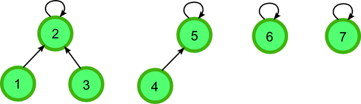
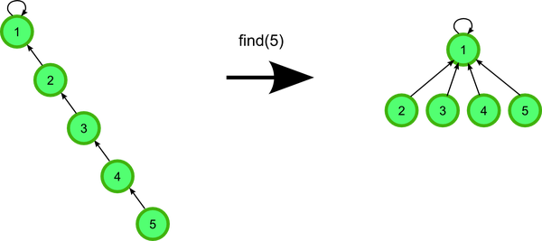
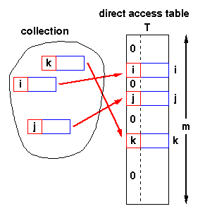

Disjoint-Set Data Structure
In order to keep track of the connected components of a minimum spanning tree when implementing Kruskal's algorithm, a disjoint-set data structure should be used.
Disjoint-set data structure, also called union-find data structure, is a data structure that keeps track of a set of elements partitioned into a number of disjoint subsets.
A disjoint-set data structure supports following operations:
MAKE-SET(x)creates a new set whose only member is \(x\)UNION(x,y)unites the dynamic sets that contains \(x\) and \(y\), into a new set that is the union of these two sets.FIND-SET(x)returns the representative of the set containing \(x\).
Linked-List Implementation
Each set is represented by its own linked list. The object for each set has attributes head, pointing to the first object in the list, and tail, pointing to the last object. Each object in the linked list contains a set member, a pointer to the next object in the list, and a pointer back to the set object.

Weighted-Union Heuristic: And each linked list also includes the length of the list and we always append the shorter list onto the longer.
Using the linked-list representation of disjoint sets and the weighted-union heuristic, a sequence of \(m\) MAKE-SET, UNION, and FIND-SET, \(n\) of which are MAKE-SET operations, takes \(O(m+n\lg n)\) time.
class Node:
"""
class Node for double liked list
"""
def __init__(self, elem):
self.prev = None
self.elem = elem
self.next = None
def __hash__(self):
return hash(self.elem)
def __eq__(self, x, y):
return x.elem == y.elem
class LinkedList:
def __init__(self):
self.head = None
self.tail = None
self.length = 0
def add(self, node):
"""
add element to disjoint set
"""
if self.head:
node.prev = self
self.tail.next = node
self.tail = node
else:
self.head = node
self.tail = node
node.prev = self
self.length += 1
def __len__(self):
return self.length
def set_length(self, l):
self.length = l
def __iter__(self):
next_node = self.head
while next_node:
yield next_node
next_node = next_node.next
class DisjointSet:
def __init__(self):
self.sets = []
def make_set(self, node):
"""
creates a new set whose only member (and thus representative) is x.
"""
alist = LinkedList()
alist.add(node)
self.sets.append(alist)
return alist
def union(self, nodex, nodey):
"""
unites the dynamic sets that contain x and y, into a new set that is the union of these two sets.
"""
listx = self.find_set(nodex)
listy = self.find_set(nodey)
# append the shorter list onto the longer.
if len(listx) > len(listy):
listx.tail.next = listy.head
for y in listy:
y.prev = listx
listx.tail = listy.tail
listx.set_length = len(listx) + len(listy)
self.sets.remove(listy)
else:
listy.tail.next = listx.head
for x in listx:
x.prev = listy
listy.tail = listx.tail
listy.setlength = len(listx) + len(listy)
self.sets.remove(listx)
def find_set(self, node):
"""
returns the representative of the set containing x
"""
return node.prev
def connected_components(self):
for link_list in self.sets:
print('( ', end='')
for node in link_list:
print(node.elem, end=' ')
print(') ', end='')
def __len__(self):
return len(self.sets)
Forest Implementation of Disjoint-Set
Disjoint-set forest, a faster implementation of disjoint sets, uses rooted trees represent sets, with each node containing one member and each tree representing one set. In a disjoint-set forest, each member points only to its parents. The root of each tree contains the representative and is its own parent.

Union by Rank: For each node, we maintain a rank, which is an upper bound on the hight of the node. We make the root with smaller rank point to the root with larger rank during a Union operation.
Path Compression: When we call find_set, we traverse the path from a node up to its root. Instead of just returning root, we will link all the nodes in this path directly to root.

class Node:
"""
Each node contains one element
"""
def __init__(self, elem):
self.parent = []
self.elem = elem
self.rank = 0
class DisjointSet:
"""
Disjoint set data strcuture
"""
def __init__(self):
self.sets = []
def make_set(self, node):
"""
creates a new set whose only member (and thus representative) is x.
"""
node.parent = node
self.sets.append(node)
def union(self, nodex, nodey):
"""
unites the dynamic sets that contain x and y, into a new set that is the union of these two sets.
"""
tree_x = self.find_set(nodex)
tree_y = self.find_set(nodey)
if tree_x.rank > tree_y.rank:
tree_y.parent = tree_x
self.sets.remove(tree_y)
tree_x.rank += 1
else:
tree_x.parent = tree_y
self.sets.remove(tree_x)
tree_y.rank += 1
def find_set(self, node):
"""
returns the representative of the set containing x
"""
if node != node.parent:
node.parent = self.find_set(node.parent)
return node.parent
def __len__(self):
return len(self.sets)
Reference
- Cormen, Leiserson, Rivest, and Stein. 2009. Introduction to Algorithms (3rd edition)
- Disjoint-set Data Structure MIT
Greedy algorithm (1): Introduction
Definition
A greedy algorithm always makes the choice that looks best at the moment. That is, it makes a locally optimal choice in the hope that this choice will lead to a globally optimal solution. (Cormen et al., 2009)
Contrast with Divide & Conquer
- Easy to propose multiple greedy algorithms for many problems.
- Easy running time analysis. (Contrast with Master method etc.)
- Hard to establish correctness. (Contrast with straightforward inductive correctness proofs.)
DANGER: Most greedy algorithms are NOT correct. (Even if your intuition says otherwise!)
Examples
The Optimal Caching Algorithm
Theorem: [Bélády's 1960s] Farthest-in-Future is the optimal algorithm that minimizes the number of cache misses.
Bélády's Algorithm:
When \(d_i\) is requested but not in the cache,
evict the cache item that will next be used farthest into the future.
A Scheduling Problem
Assume: Each job has a:
- weight \(w_j\) (“priority”)
- length \(l_j\)
The completion time \(C_j\) of job \(j\) = Sum of job lengths up to and including \(j\).
Goal: Minimize the weighted sum of completion times: \(\min \sum ^n_j= w_jC_j\)
Reference
- Cormen, Leiserson, Rivest, and Stein. 2009. Introduction to Algorithms (3rd edition)
Hash Table (4): Universal Hashing
Let \(H\) be a finite collection of hash functions that map a given universe \(U\) of keys into the range \(\{0,1,...,m-1\}\). Such a collection is said to be universal if for each pair of distinct keys \(k,l \in U\), the number of hash function \(h \in H\) for which \(h(k) = h(l)\) is at most \(\frac{|H|}{m}\), i.e.
\[ \forall k,l \in U, k\ne l: \Pr_{h\in H }[h(x)=h(y)]\le \frac{1}{m} \]
Why Universal Hashing?
Some malicious adversary might chooses the keys which all hash to the same slot, yielding an average retrieval time of \(\Theta(n)\). Instead of fixed hash functions, randomly chosen hash functions can yield good performance on average.
Designing a universal class of hash functions
In short, you can generate family of hash functions using following simple equation:
h(x,a,b) = ((ax+b) mod p) mod m
\(x\) is key you want to hash
\(a\) is any number you can choose between \(1\) to \(p-1\) inclusive.
\(b\) is any number you can choose between \(0\) to \(p-1\) inclusive.
\(p\) is a prime number that is greater than max possible value of \(x\)
\(m\) is a max possible value you want for hash code + 1
By selecting different values of \(a\) and \(b\) you can generate many hash codes that are independent of each other.
Implementation
import random
class UniversalHash:
"""
>>> h=UniversalHash()
>>> h[54]="cat"
>>> h[26]="dog"
>>> h[93]="lion"
>>> h[77]="bird"
>>> h[31]="cow"
>>> h[44]="goat"
>>> 54 in h
True
"""
def __init__(self):
self.size = 100
self.slots = [None] * self.size
self.data = [None] * self.size
(self.p, self.a, self.b) = self.generate_hash_constants()
def generate_hash_constants(self):
"""
generate a, b, p for universal hashing
"""
p = self._get_prime() # set p a random prime number
a = random.randint(1, p - 1) # A has a random value between 1 and p - 1.
b = random.randint(1, p - 1) # B has a random value between 1 and p - 1
return p, a, b
def put(self, key, data):
hash_value = self.hash_function(key)
if self.slots[hash_value] is None:
self.slots[hash_value] = key
self.data[hash_value] = data
elif self.slots[hash_value] == key:
self.data[hash_value] = data
else:
# rehash
next_slot = self.rehash(hash_value, len(self.slots))
while self.slots[next_slot] is not None and self.slots[next_slot] != key:
next_slot = self.rehash(hash_value, len(self.slots))
if self.slots[next_slot] is None:
self.slots[next_slot] = key
self.data[hash_value] = data
else:
self.data[hash_value] = data
def hash_function(self, key):
"""
hash_function implements the simple remainder method
"""
return round(self.a * key + self.b) % self.p % self.size
def rehash(self, old_hash, size):
"""
linear probing with a plus 1
"""
return (old_hash+1) % size
def get(self, key):
start_slot = self.hash_function(key)
data = None
stop = False
found = False
position = start_slot
while self.slots[position] is not None and \
not found and not stop:
if self.slots[position] == key:
found = True
data = self.data[position]
else:
position = self.rehash(position, len(self.slots))
if position == start_slot:
stop = True
return data
def _is_prime(self,n):
if n <= 2 or n%2 == 0:
return False
return not any((n%i == 0 for i in range(3, n-1)))
def _get_prime(self, p=0):
"""
get a prime number
"""
if p == 0:
p = random.randint(1000000,10000000)
while not self._is_prime(p):
p += 1
return p
def __getitem__(self, key):
return self.get(key)
def __setitem__(self, key, data):
self.put(key, data)
def __len__(self):
"""
return length
"""
count = 0
for item in self.slots:
if item is not None:
count += 1
return count
def __contains__(self, item):
"""
定义了使用in和not in进行成员测试时类的行为
"""
return self.get(item) is not None
def __iter__(self):
"""
iterator
"""
for item in self.slots:
if item is not None:
yield item
if __name__ == "__main__":
import doctest
doctest.testmod(verbose=True)
Resources
- Hash Functions and Hash Tables
- Cormen, Leiserson, Rivest, and Stein, Introduction to Algorithms (3rd edition)
Python树(三)：Binary Search Tree
A binary search tree is a tree that keys that are less than the parent are found in the left subtree, and keys that are greater than the parent are found in the right subtree.
Let \(x\) be a node in a binary search tree. If \(y\) is a node in the left subtree of \(x\), then \(y.key\le x.key\). If \(y\) is a node in the right subtree of \(x\), then \(y.key\le x.key\).
Implementation
Map()Create a new, empty map.put(key,val)Add a new key-value pair to the map. If the key is already in the map then replace the old value with the new value.get(key)Given a key, return the value stored in the map orNoneotherwise.delDelete the key-value pair from the map using a statement of the formdel map[key].len()Return the number of key-value pairs stored in the map.inReturnTruefor a statement of the formkey in map, if the given key is in the map.
To implement the binary search tree, the method of the nodes and references approached similar to binary tree(Link) The BinarySearchTree class has a reference to the TreeNode that is the root of the binary search tree.
delete method
Once we’ve found the node containing the key we want to delete, there are three cases that we must consider:
- The node to be deleted has no children.
- The node to be deleted has only one child.
- The node to be deleted has two children.
The first case is straightforward. If the current node has no children all we need to do is delete the node and remove the reference to this node in the parent. The code for this case is shown in here.
The second case is only slightly more complicated. If a node has only a single child, then we can simply promote the child to take the place of its parent. The code for this case is shown in the next listing. As you look at this code you will see that there are six cases to consider. Since the cases are symmetric with respect to either having a left or right child we will just discuss the case where the current node has a left child. The decision proceeds as follows:
- If the current node is a left child then we only need to update the parent reference of the left child to point to the parent of the current node, and then update the left child reference of the parent to point to the current node’s left child.
- If the current node is a right child then we only need to update the parent reference of the left child to point to the parent of the current node, and then update the right child reference of the parent to point to the current node’s left child.
- If the current node has no parent, it must be the root. In this case we will just replace the key, payload, leftChild, and rightChild data by calling the
replaceNodeDatamethod on the root.
The third case is the most difficult case to handle. If a node has two children, then it is unlikely that we can simply promote one of them to take the node’s place. We can, however, search the tree for a node that can be used to replace the one scheduled for deletion. What we need is a node that will preserve the binary search tree relationships for both of the existing left and right subtrees. The node that will do this is the node that has the next-largest key in the tree. We call this node the successor, and we will look at a way to find the successor shortly. The successor is guaranteed to have no more than one child, so we know how to remove it using the two cases for deletion that we have already implemented. Once the successor has been removed, we simply put it in the tree in place of the node to be deleted.
successor Method
The code to find the successor is a method of the TreeNode class. This code makes use of the same properties of binary search trees that cause an inorder traversal to print out the nodes in the tree from smallest to largest. There are three cases to consider when looking for the successor:
- If the node has a right child, then the successor is the smallest key in the right subtree.
- If the node has no right child and is the left child of its parent, then the parent is the successor.
- If the node is the right child of its parent, and itself has no right child, then the successor to this node is the successor of its parent, excluding this node.
class BinarySearchTree(object):
def __init__(self):
self.root = None
self.size = 0
def put(self, key, val):
if self.root:
self._put(key, val, self.root)
else:
self.root = TreeNode(key, val)
self.size = self.size + 1
def _put(self, key, val, currentNode):
if key < currentNode.key:
if currentNode.hasLeftChild():
self._put(key, val, currentNode.leftChild)
else:
currentNode.leftChild = TreeNode(key, val, parent=currentNode)
else:
if currentNode.hasRightChild():
self._put(key, val, currentNode.rightChild)
else:
currentNode.rightChild = TreeNode(key, val, parent=currentNode)
def __setitem__(self, k, v):
self.put(k, v)
def get(self, key):
if self.root:
res = self._get(key, self.root)
if res:
return res.payload
else:
return None
else:
return None
def _get(self, key, currentNode):
if not currentNode:
return None
elif currentNode.key == key:
return currentNode
elif key < currentNode.key:
return self._get(key, currentNode.leftChild)
else:
return self._get(key, currentNode.rightChild)
def __getitem__(self, key):
res = self.get(key)
if res:
return res
else:
raise KeyError('Error, key not in tree')
def __contains__(self, key):
if self._get(key, self.root):
return True
else:
return False
def length(self):
return self.size
def __len__(self):
return self.size
def __iter__(self):
return self.root.__iter__()
def delete(self, key):
if self.size > 1:
nodeToRemove = self._get(key, self.root)
if nodeToRemove:
self.remove(nodeToRemove)
self.size = self.size - 1
else:
raise KeyError('Error, key not in tree')
elif self.size == 1 and self.root.key == key:
self.root = None
self.size = self.size - 1
else:
raise KeyError('Error, key not in tree')
def __delitem__(self, key):
self.delete(key)
def remove(self, currentNode):
if currentNode.isLeaf(): # leaf
if currentNode == currentNode.parent.leftChild:
currentNode.parent.leftChild = None
else:
currentNode.parent.rightChild = None
elif currentNode.hasBothChildren(): # interior
succ = currentNode.findSuccessor()
succ.spliceOut()
currentNode.key = succ.key
currentNode.payload = succ.payload
else: # this node has one child
if currentNode.hasLeftChild():
if currentNode.isLeftChild():
currentNode.leftChild.parent = currentNode.parent
currentNode.parent.leftChild = currentNode.leftChild
elif currentNode.isRightChild():
currentNode.leftChild.parent = currentNode.parent
currentNode.parent.rightChild = currentNode.leftChild
else:
currentNode.replaceNodeData(currentNode.leftChild.key,
currentNode.leftChild.payload,
currentNode.leftChild.leftChild,
currentNode.leftChild.rightChild)
else:
if currentNode.isLeftChild():
currentNode.rightChild.parent = currentNode.parent
currentNode.parent.leftChild = currentNode.rightChild
elif currentNode.isRightChild():
currentNode.rightChild.parent = currentNode.parent
currentNode.parent.rightChild = currentNode.rightChild
else:
currentNode.replaceNodeData(currentNode.rightChild.key,
currentNode.rightChild.payload,
currentNode.rightChild.leftChild,
currentNode.rightChild.rightChild)
def inorder(self):
self._inorder(self.root)
def _inorder(self, tree):
if tree != None:
self._inorder(tree.leftChild)
print(tree.key)
self._inorder(tree.rightChild)
def postorder(self):
self._postorder(self.root)
def _postorder(self, tree):
if tree:
self._postorder(tree.rightChild)
self._postorder(tree.leftChild)
print(tree.key)
def preorder(self):
self._preorder(self, self.root)
def _preorder(self, tree):
if tree:
print(tree.key)
self._preorder(tree.leftChild)
self._preorder(tree.rightChild)
class TreeNode:
def __init__(self, key, val, left=None, right=None, parent=None):
self.key = key
self.payload = val
self.leftChild = left
self.rightChild = right
self.parent = parent
self.balanceFactor = 0
def hasLeftChild(self):
return self.leftChild
def hasRightChild(self):
return self.rightChild
def isLeftChild(self):
return self.parent and self.parent.leftChild == self
def isRightChild(self):
return self.parent and self.parent.rightChild == self
def isRoot(self):
return not self.parent
def isLeaf(self):
return not (self.rightChild or self.leftChild)
def hasAnyChildren(self):
return self.rightChild or self.leftChild
def hasBothChildren(self):
return self.rightChild and self.leftChild
def replaceNodeData(self, key, value, lc, rc):
self.key = key
self.payload = value
self.leftChild = lc
self.rightChild = rc
if self.hasLeftChild():
self.leftChild.parent = self
if self.hasRightChild():
self.rightChild.parent = self
def findSuccessor(self):
succ = None
if self.hasRightChild():
succ = self.rightChild.findMin()
else:
if self.parent:
if self.isLeftChild():
succ = self.parent
else:
self.parent.rightChild = None
succ = self.parent.findSuccessor()
self.parent.rightChild = self
return succ
def spliceOut(self):
if self.isLeaf():
if self.isLeftChild():
self.parent.leftChild = None
else:
self.parent.rightChild = None
elif self.hasAnyChildren():
if self.hasLeftChild():
if self.isLeftChild():
self.parent.leftChild = self.leftChild
else:
self.parent.rightChild = self.leftChild
self.leftChild.parent = self.parent
else:
if self.isLeftChild():
self.parent.leftChild = self.rightChild
else:
self.parent.rightChild = self.rightChild
self.rightChild.parent = self.parent
def findMin(self):
current = self
while current.hasLeftChild():
current = current.leftChild
return current
def __iter__(self):
"""The standard inorder traversal of a binary tree."""
if self:
if self.hasLeftChild():
for elem in self.leftChild:
yield elem
yield self.key
if self.hasRightChild():
for elem in self.rightChild:
yield elem
Heap (1): Introduction and Implementation
A heap (堆)is a specialized tree-based data structure。 A heap can be classified as either a max heap or a min heap.
- In a max heap, the keys of parent nodes are always greater than or equal to those of the children and the highest key is in the root node.
- In a min heap, the keys of parent nodes are less than or equal to those of the children and the lowest key is in the root node.
Heap is one maximally efficient implementation of an abstract data type called a priority queue (see here), and in fact priority queues are often referred to as heaps, regardless of how they may be implemented.
Implementation
Priority queues typically use a heap as backbone, giving \(O(\log n)\) performance for inserts and removals, and \(O(n \log n)\) to build initially.
Binary Heap
A common implementation of a heap is the binary heap(二叉堆), in which the tree is a complete binary tree(完全二叉树).
二叉堆的操作与实现
BinaryHeap()：创建一个新的、空的二叉堆对象insert(k)：把新元素加入到堆中findMin()：返回堆中的最小项，最小项仍保留在堆中delMin()：返回堆中的最小项，同时从堆中删除isEmpty()：返回堆是否为空size()：返回堆中元素的个数buildHeap(list)：从一个包含元素的列表创建新堆
有两个关键的操作：
1. insert方法。首先，为了满足“完全二叉树”的性质，新键值应该添加到列表的末尾。然而新键值简单地添加在列表末尾，显然无法满足堆次序。所以要通过比较父节点和新加入的元素的方法来重新满足堆次序。如果新加入的元素比父节点要小，可以与父节点互换位置；不断交换，直到到达树的顶端。下图所示一系列交换操作来使新加入元素“上浮”到正确的位置。

2.delMin方法 移走根节点的元素后如何保持堆结构和堆次序: 首先，用最后一个节点来代替根节点, 移走最后一个节点保持了堆结构的性质。这么简单的替换，还是会破坏堆次序。第二步，将新节点“下沉”来恢复堆次序。下图所示的是一系列交换操作来使新节点“下沉”到正确的位置。

class BinHeap(object):
"""
创建一个新的、空的二叉堆对象
"""
def __init__(self):
self.list = [0]
self.size = 0
def perc_up(self,i):
"""
Percolate the new node into proper position
"""
while i:
if self.list[i] < self.list[i//2]:
self.list[i], self.list[i//2] = self.list[i//2], self.list[i]
i = i//2
def insert(self, item):
"""把新元素加入到堆中"""
self.list.append(item)
self.size += 1
self.perc_up(self.size)
def findMin(self):
"""返回堆中的最小项，最小项仍保留在堆中"""
return self.list[1]
def delMin(self):
"""返回堆中的最小项，同时从堆中删除"""
retval = self.list[1]
self.list[1] = self.list[-1]
self.size -=1
self.list.pop()
self.perc_down(1)
return retval
def perc_down(self, i):
"""
Percolate the root node down the tree
"""
while i*2 <= self.size:
if i*2+1 > self.size:
self.list[i*2], self.list[i] = self.list[i], self.list[i*2]
i = i*2
else:
if self.list[i*2] > self.list[i*2+1]:
self.list[i*2+1], self.list[i] = self.list[i], self.list[i*2+1]
i = i*2+1
else:
self.list[i*2], self.list[i] = self.list[i], self.list[i*2]
i = i*2
def isEmpty(self):
"""返回堆是否为空"""
return self.size == 0
def __len__(self):
"""返回堆中元素的个数"""
return self.size
def buildHeap(self,alist):
"""从一个包含元素的列表创建新堆"""
self.size = len(alist)
self.list.extend(alist)
i = self.size//2
while i >0:
self.perc_down(i)
i -= 1


Hash Table (1): Introduction
One of the most useful Python collections is the dictionary, which is an associative data type where you can store key-data pairs. It is implemented using hash tables(哈希表).
Hash table (哈希表) is a collection of items which are stored in such a way as to make it easy to find item. Each position of the hash table, often called a slot, can hold an item and is named by an integer value starting at 0. The mapping between an item and the slot where that item belongs in the hash table is called the hash function(哈希函数). A perfect hash function maps every items into a unique slot. When two items hash to the same slot, collision happens. And a systematic method, which called collision resolution, for placing the second item in the hash table must be put forward.
Direct-address tables
If the number of possible keys is small and they are unique, direct-address tables (直接寻址表) can be used. Each slot corresponds to a unique key.
Insert(T,x)
T[key(x)] = x
Search(T,x)
return(T[key(x)])
Delete(T,x)
T[key(x)] = NIL

The range of the key determines the size of the direct address table and may be too large to be practical. For instance, it's not likely that you'll be able to use a direct address table to store elements which have arbitary 32-but integers as their keys for a few years yet.
Hash function
What is a good hash function
Hash functions should have the following properties:
- Fast computation of the hash value (\(O(1)\))
- Hash values should be distributed (nearly) uniformly
The goal of a hash function is
- disperse the keys in an apparently random way
Remainder method simply takes an item and divides it by the table size, returning the remainder as its hash value, i.e. \(h(item)=item\%11\)
Folding method begins by dividing the item into equal size pieces (the last piece may not be of equal size), and then added together to give the resulting hash value by extra step of dividing by the table size and keeping the remainder.
Collision Resolution
Various techniques are used to manage collision:
- Chaining (链接法)
- Open addressing (开放寻址法)
- linear probing (线性探查)
- quadratic probing (二次探查)
chaining
Chaining(链接法) allows each slot to hold a reference to a collection of items. It allows many items to exist at the same location in the hash table.

Open addressing
In open addressing, all elements occupy the hash table itself. That is, each table entry contains either an element of the dynamic set or NIL. When searching for an element, we systematically examine table slots until either we find the desired element or we have ascertained that the element is not in the table. No lists and no elements are stored outside the table, unlike in chaining.
Linear probing
One of the simplest re-hashing functions is +1(or -1) on a collision, i.e. look in the neighbouring slot in the table. It calculates new address extremely quickly.
A disadvantage to linear probing is the tendency for clustering: items become clustered in the table.
Quadratic probing
Instead of using a constant 'skip' value, quadratic probing using a rehash function that increments the hash value by 1,3,5,7,9 and so on. This means that if the first hash value is \(h\), the successive values are \(h+1\), \(h+4\),\(h+9\), \(h+16\) and so on.
Load factor
Load factor (装载因子) is commonly denoted by \(\lambda = \frac{number\_of\_items}{table\_size}\).
The most important piece of information we need to analyze the use of a hash table is the load factor, \(\lambda\). Conceptually, if the load factor is small, then there is a lower chance of collisions.
For a successful search, using open addressing with linear probing, the average number of comparisons is approximately \(\frac{1}{2}(1+\frac{1}{1-\lambda})\) and an unsuccessful search gives \(\frac{1}{2}(1+(\frac{1}{1-\lambda})^2)\).
Using chaining, the average number of comparisons is \(1+\lambda/2\) for the successful case, and simply \(\lambda\) comparisons if the search is unsuccessful.
High load factor \(\alpha \ge 0.85\) has negative effect on efficiency:
- lots of collisions efficiency due to collision overhead
其中出现的魔法方法可以参见Link


链表
- 线性表
- 单向链表
- ，是一种线性表，不像顺序表一样连续存储数据，而是在每一个节点（数据存储单元）里存放下一个节点的位置信息（即地址）。
线性表
一组序列元素的组织形式，可以将其抽象为线性表。一个线性表是某类元素的一个集合，还记录着元素之间的一种顺序关系。线性表是最基本的数据结果一直，在实际程序中应用非常广泛，它还将常被用来做更复杂的数据结构的实现基础。
根据线性表的存储方式，分为两种模型：
- 顺序表，将元素顺序地放在一块连续的存储区里，元素间的顺序关系由它们的存储顺序自然表示。
- 链表，将元素存放在通过链接构造起来的一系列存储块中,包括单项列表，双向列表，单向循环列表
单向链表
节点：包括表元素域，和下一个节点连接域。
尾节点的连接域指向一个空值。
补充：python中变量标识的本质
变量标识保存变量的地址。因此不用指定变量的类型，在程序运行过程中也可以改变变量类型。
与C语言不同：C语言需要申明变量类型。
示意

代码
class Node(object):
"""节点"""
def __init__(self, elem):
self.elem = elem
self.next = None
class SingleLinkList(object):
"""单链表"""
def __init__(self, node=None):
self.__head = node
def is_empty(self):
"""链表是否为空"""
return self.__head == None
def length(self):
"""链表长度"""
# cur游标，用来移动遍历节点
cur = self.__head
# count记录数量
count = 0
while cur != None:
count += 1
cur = cur.next
return count
def travel(self):
"""遍历整个链表"""
cur = self.__head
while cur != None:
print(cur.elem, end=" ")
cur = cur.next
print("")
def add(self, item):
"""链表头部添加元素，头插法"""
node = Node(item)
node.next = self.__head
self.__head = node
def append(self, item):
"""链表尾部添加元素, 尾插法"""
node = Node(item)
if self.is_empty():
self.__head = node
else:
cur = self.__head
while cur.next != None:
cur = cur.next
cur.next = node
def insert(self, pos, item):
"""指定位置添加元素
:param pos 从0开始
"""
if pos <= 0:
self.add(item)
elif pos > (self.length()-1):
self.append(item)
else:
pre = self.__head
count = 0
while count < (pos-1):
count += 1
pre = pre.next
# 当循环退出后，pre指向pos-1位置
node = Node(item)
node.next = pre.next
pre.next = node
def remove(self, item):
"""删除节点"""
cur = self.__head
pre = None
while cur != None:
if cur.elem == item:
# 先判断此结点是否是头节点
# 头节点
if cur == self.__head:
self.__head = cur.next
else:
pre.next = cur.next
break
else:
pre = cur
cur = cur.next
def search(self, item):
"""查找节点是否存在"""
cur = self.__head
while cur != None:
if cur.elem == item:
return True
else:
cur = cur.next
return False
单项链表与顺序表的对比
- 顺序表随机读取，空间开销小的优点，但存储空间必须连续
- 链表由于增加了结点的指针域，空间开销比较大
- 链表对存储空间的使用要相对灵活，充分利用离散的存储空间
| 操作 | 链表 | 顺序表 |
|---|---|---|
| 访问元素 | O(n) | O(1) |
| 在头部插入/删除 | O(1) | O(n) |
| 在尾部插入/删除 | O(n) | O(1) |
| 在中间插入/删除 | O(n) | O(n) |
双向链表
节点：前驱区、数据区、后继区

class Node(object):
def __init__(self, elem):
self.prev = None
self.elem = elem
self.next = None
class DobuleLinkList(object):
"""
双链表
"""
def __init__(self, node = None):
self.__head = node # 私有属性
def is_empty(self):
"""
链表是否为空
"""
return self.__head is None
def length(self):
"""
链表长度
"""
current = self.__head # current 游标，用来移动遍历节点
count = 0 # count 记录数量
while current != None:
count += 1
current = current.next
return count
def travel(self):
"""
遍历整个链表
"""
current = self.__head # current 游标，用来移动遍历节点
lists = []
while current != None:
lists.append(current.elem)
current = current.next
print(lists)
def add(self, item):
"""
链表头部添加元素
"""
second_elem = self.__head
self.__head = Node(item)
self.__head.next = second_elem
second_elem.prev = self.__head
def append(self, item):
"""
链表尾部添加元素
item: 具体的数据，不是class Node
"""
node = Node(item)
# 判断链表是否为空
if self.is_empty():
self.__head = node
else:
current = self.__head
while current.next != None: # 遍历，找到节点尾部
current = current.next
current.next = node
node.prev = current
def insert(self, pos, item):
"""
指定位置添加元素
pos: 从0开始索引
"""
if pos <= 0:
self.add(item)
elif pos >= self.length()-1:
self.append(item)
else:
count = 0
current = self.__head
while count < pos:
current = current.next
count += 1
previous = current.prev
nodes = Node(item)
previous.next = nodes
nodes.prev = previous
nodes.next = current
current.prev = nodes
def remove(self,item):
"""
删除节点
"""
current = self.__head
if current.elem == item:
self.__head = current.next
if current.next:
current.next.prev = None
print('Remove the element %d'%item)
return None
else:
while current != None:
if current.elem == item:
current.prev.next = current.next
current.next.prev = current.prev
print('Remove the element %d'%item)
return None
else:
current = current.next
print("Can't find it")
def search(self,item):
"""
查找节点是否存在
"""
current = self.__head
while current != None:
if current.elem == item:
print('Find element %d !'% item)
return True
else:
current = current.next
return False
单向循环列表

class Node(object):
"""
节点
"""
def __init__(self, elem):
self.elem = elem
self.next = None
class SingleCycleLinkList(object):
"""
单链表
"""
def __init__(self, node = None):
self.__head = node # 私有属性
if node:
node.next = node #设置回环
def is_empty(self):
"""
链表是否为空
"""
return self.__head is None
def length(self):
"""
链表长度
"""
if self.is_empty():
return 0
else:
current = self.__head # current 游标，用来移动遍历节点
count = 1 # count 记录数量
while current.next != self.__head:
count += 1
current = current.next
return count
def travel(self):
"""
遍历整个链表
"""
current = self.__head # current 游标，用来移动遍历节点
lists = []
if current: # 如果链表有元素
lists.append(current.elem)
current = current.next
while current is not self.__head:
lists.append(current.elem)
current = current.next
print(lists)
def add(self, item):
"""
链表头部添加元素
"""
if self.is_empty():
self.__init__(Node(item))
else:
former_head = self.__head
current = self.__head
while current.next is not self.__head:
current = current.next
current.next= Node(item)
current.next.next = former_head
self.__head = current.next
def append(self, item):
"""
链表尾部添加元素
item: 具体的数据，不是class Node
"""
node = Node(item)
# 判断链表是否为空
if self.is_empty():
self.__init__(node)
else:
current = self.__head
while current.next != self.__head: # 遍历，找到节点尾部
current = current.next
current.next = node
node.next = self.__head
def insert(self, pos, item):
"""
指定位置添加元素
pos: 从0开始索引
"""
if pos <= 0:
self.add(item)
elif pos >= self.length()-1:
self.append(item)
else:
count = 0
current = self.__head
while count < pos:
previous = current
current = current.next
count += 1
nodes = Node(item)
previous.next = nodes
nodes.next = current
def remove(self,item):
"""
删除节点
"""
# 如果是空单向链表
if self.is_empty():
print("Can't find item %d" % item)
return False
# 如果单向链表只有一个元素
if self.length() == 1:
if self.__head.elem == item:
self.__head = None
print('Remove the element %d'%item)
return True
else:
print("Can't find item %d" % item)
return False
# 通用
current = self.__head
# 删除第一个元素（头节点）
if current.elem == item:
former_head = current
self.__head = current.next
print('Remove the element %d'%item)
while current.next is not former_head:
current = current.next
current.next = self.__head
return None
else:
while current.next != self.__head:
if current.elem == item:
previous.next = current.next
print('Remove the element %d'%item)
return None
else:
previous = current
current = current.next
# 处理尾部元素
if current.elem == item:
previous.next = self.__head
print('Remove the element %d'%item)
return None
print("Can't find item %d" % item)
def search(self,item):
"""
查找节点是否存在
"""
if self.is_empty():
return False
current = self.__head
while current.next is not self.__head:
if current.elem == item:
print('Find element %d'% item)
return True
else:
current = current.next
if current.elem == item:
return True
print('Find element %d'% item)
return False

Copyright © 2017